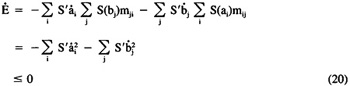

by Abraham Kandel
CRC Press, CRC Press LLC
ISBN: 084934297x Pub Date: 11/01/91
|
|
Fuzzy Expert Systems
by Abraham Kandel CRC Press, CRC Press LLC ISBN: 084934297x Pub Date: 11/01/91 |
| Previous | Table of Contents | Next |
S(ai(t)) and S(bj(t)) take values in [0,1], and then A(t) = (S(a1(t)), . . . , S(an(t))) and B(t) = (S(b1(t)), . . . , S(bp(t))) define fuzzy sets in In and Ip at any time t. In other words, Equations 17 and 18 equate analogue neurons to fuzzy sets! Ultimately this is perhaps the deepest connection between neural networks and fuzzy theory.
The signal function S in the input sums to ai and bj denotes an arbitrary monotone nondecreasing function and, thus, its derivative S′ with respect to the argument ai or bj is nonnegative, S′ ≥ 0. In particular, S is a sigmoid or S-shaped curve such as S(x) = (1 + e-bx)-1 for positive b. It is well known that neuron firing frequency is sigmoidal. Indeed, the fact that neuron input-output curves are S-shaped has the status of a neurobiological constant. Nature selected sigmoidal behavior for some good reason. Grossberg15-18 has proven the remarkable fact that, roughly speaking, a sigmoid signal function is optimal because it computes a quenching threshold below which activity is suppressed as noise and above which activity is contrast enhanced (then stored in short-term memory). Unfortunately linear signal functions (S(ai) = ai) amplify noise as faithfully as they amplify signals. At first sight, then, the hyperplane threshold laws in Equations 11 and 12 appear inadmissible. However, threshold linear (step function) behavior is the limiting case of a steep sigmoid curve. The first terms on the right-hand side of Equations 17 and 18 are again the input sums to ai and bj. The second terms are passive decay terms. If no activation flows into them, ai and bj exponentially decay to zero. We note that constant input Ii (Jj) or constant thresholds -Ai (-Bj) can be added to the right-hand sides of Equations 17 and 18. We shall omit these terms for notational convenience in the dynamic analysis following.
The global stability of the BAM system defined in Equations 17 and 18 can be analyzed by applying the Lyapunov techniques of the Cohen-Grossberg theorem9,24 (which was proved for general unidirectional autoassociators). Lyapunov techniques offer a shortcut to global analysis of a dynamic system without solving the underlying differential equations. For very steep S, we can prove BAM convergence for Equations 17 and 18 by taking the time derivative of the bounded energy function:
The steep S assumption essentially allows us to ignore the passive decay terms -ai and -bj in Equations 17 and 18. Then the chain and product rules of differentiation (and relabeling of mij as needed) give:

upon substitution of Equations 17 and 18 (with zeroed decay terms) for input sums. If passive decay terms are used, appropriate sums of integrals must be added to Equation 19 to allow the substitution trick of Equation 20 to work. Similarly, if inputs and thresholds are used in Equations 17 and 18, sums of the terms S(a1) Ii and -S(ai) Ai must be added. Since the constant connection matrix M used was an arbitrary n-by-p real matrix, this proves that every matrix is continuously bidirectionally stable.
We next examine Hopfield’s26 neural-circuit interpretation of Cohen-Grossberg unidirectional autoassociators. Hopfield proposes a resistance-capacitance charging equation of the form:

for symmetrical M, where Ci is the input capacitance of the ith cell membrane, Ri is the transmembrane resistance, and 1/mij is the finite impedance between the output voltage Vj and the cell body of cell i. The voltage vector V(t) = (V1(t), . . . , Vn(t)) defines a time-varying fuzzy subset in In. The voltage signal is a sigmoid function of its input Vi = g(ui), where g(ui) describes the input-output behavior of a nonlinear amplifier with negligible response time and which is one-to-one, ui = g-1(Vi). Therefore, as a function of Vi, the integral of g-1(x) dx on [0,Vi] describes a U-shaped curve, and mij is a resistor whose magnitude is 1/Rij, Therefore,
where pi is the input resistance of the ith amplifier. Then the ui input sum V MiT is the electrical current input to the ith neuron.
As per the Cohen-Grossberg theorem, Hopfield’s symmetrical electrical network admits the global Lyapunov function:
since E is bounded below and , which follows upon differentiation, substitution of Equation 21, use of symmetrical M, and noting g-b(Vi) ≥ 0 since g-1 is a monotone increasing (sigmoid) function of Vi.
| Previous | Table of Contents | Next |